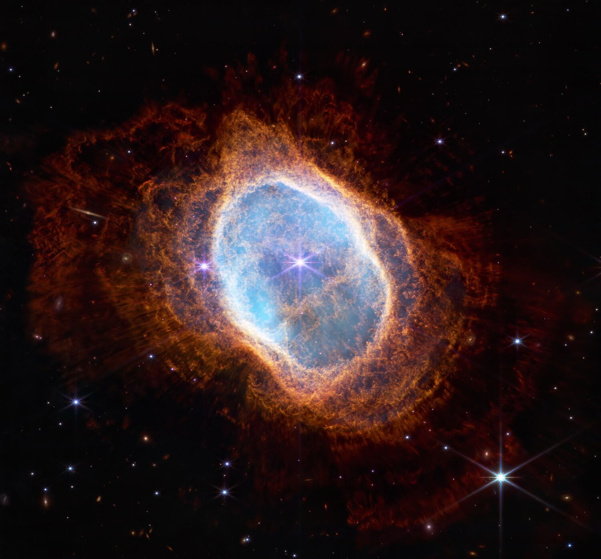

毕业要求
最后更新
评分表
| 序号 | 条件 | score | note |
|---|---|---|---|
| 1 | 完成开题答辩和学位论文 | 0 | 必须要满足的条件 |
| 2 | 第一作者发表高水平论文 | 6 | 第一作者的第一单位为东南大学，指导教师为通讯（原则上应为唯一通讯） |
| 3 | 以负责人的身份参与企业项目 | 6 | 独当一面，担当主要负责人 |
| 4 | 为实验室团队做过突出贡献 | 4 | 活动有力的组织者；团队有力的促进者；实验室热心的维护者； |
| 5 | 参与导师书籍撰写 | 4 | |
| 6 | 顶尖科技竞赛获奖 | 4 | 第一名、一等奖、金牌(我作指导教师) |
| 7 | 二作发表高水平论文/以主要人员参与专利申报 | 4 | 第一作者为课题组其他成员，第一作者的第一单位为东南大学，指导教师为通讯（原则上应为唯一通讯） |
| 8 | 三作发表高水平论文 | 2 | 第一作者为课题组其他成员，第一作者的第一单位为东南大学，指导教师为通讯（原则上应为唯一通讯） |
| 9 | 获得一家伟大公司/大学的offer | 5 | MSRA/阿里/字节/华为/腾讯等企业；以及MIT/Stanford等顶尖大学 |
📋 毕业要求概览
🎓 硕士研究生毕业标准
以下条件需同时满足：
- ✅ 满足条件1
- ✅ Total Score > 15分
🎓 博士研究生毕业标准
以下条件需同时满足：
- ✅ 满足条件1
- ✅ Total Score达到20分
- ✅ 以第一作者至少发表2篇高水平论文（一篇合格的博士学位论文一般需要4篇以上的一作论文研究作为支撑）
⚠️ 特殊情况说明
🌟 特殊情况学生培养方案
有特殊情况的学生（例如：身体功能受限、专项计划、基层边疆、军队退役学员、道德模范、见义勇为、奥运冠军、家庭贫困、精神健康等），不受上述毕业条件的限制，请在报考前第一时间与导师团队沟通，实验室会和申请人共同制定专属的培养方案，培养方案一人一议。
🏆 最佳论文奖直接毕业政策
获得ICML、NeurIPS、ICLR、KDD、ICDE、VLDB、SIGMOD、SIGIR、WSDM、ICDM、ACL、EMNLP、RecSys、CIKM、WWW、AAAI、IJCAI等国际顶尖会议的最佳论文奖(Best Paper at Any Track)的学生，无论是否达到上述毕业条件，亦无论是否达到培养年限，可直接申请毕业*。